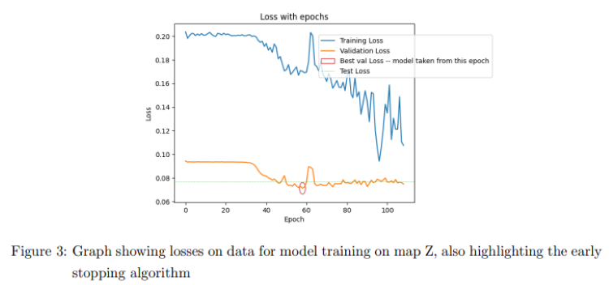
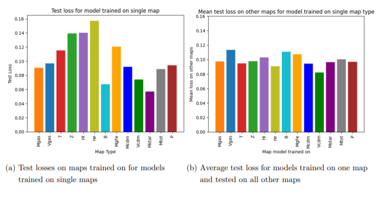
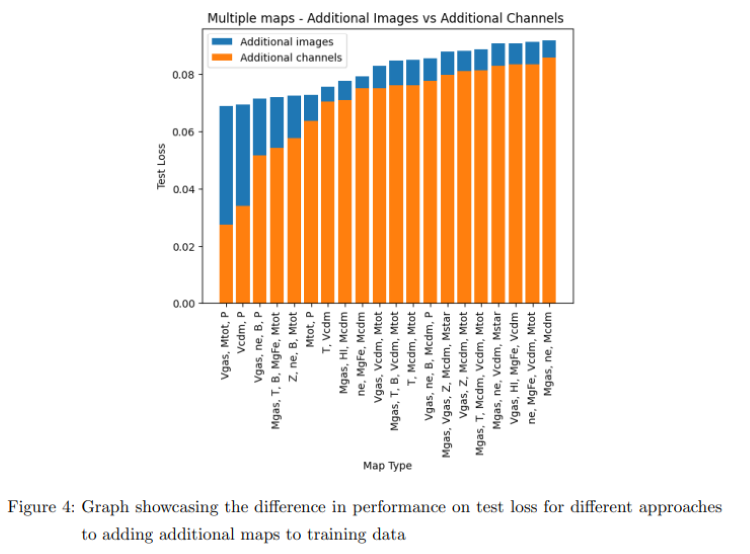

Project Overview
The CAMELS Multifield Dataset Analysis project utilizes deep learning techniques to predict fundamental cosmological parameters from simulated astrophysical datasets. Focusing on a subset of the CAMELS dataset, this analysis explores the potential of machine learning in uncovering insights about the universe.
This project is a demonstration of interdisciplinary research at the intersection of software development, data analysis, and computational physics.
Key Objectives:
- Train machine learning models to predict cosmological parameters from individual 2D maps.
- Explore the effectiveness of combining multiple maps for enhanced predictions.
- Experiment with transferring learning across different astrophysical fields.
Dataset Description
The project uses a subset of the IllustrisTNG simulation from the CAMELS dataset, focusing on 2D maps where specific astrophysical parameters are varied. The key predicted cosmological and astrophysical parameters can be seen in the table below as well as the astrophysical fields the model was trained on.
Parameter Descriptions
| Variable | Description |
|---|---|
| Ωm | Matter density in the universe |
| σ8 | Smoothness of the matter distribution |
| ASN1, ASN2 | Parameters controlling supernova feedback |
| AAGN1, AAGN2 | Parameters controlling black-hole feedback |
Astrophysical Fields
| Field | Prefix |
|---|---|
| Gas density | Mgas |
| Gas velocity | Vgas |
| Gas temperature | T |
| Gas metallicity | Z |
| Neutral hydrogen density | HI |
| Electron number density | ne |
| Magnetic fields | B |
| Magnesium over Iron | MgFe |
| Dark matter density | Mcdm |
| Dark matter velocity | Vcdm |
| Stellar mass density | Mstar |
| Total matter density | Mtot |
Methodology
The project methodology revolves around deep learning model development, leveraging PyTorch for training. The workflow included:
-
Data Preparation:
- Loaded and normalized the dataset using a custom
CAMELS_Datasetclass. - Applied data augmentation techniques but found no significant improvement in accuracy.
- Loaded and normalized the dataset using a custom
-
Model Selection and Training:
- Developed a deep learning model using PyTorch for image-to-value regression.
- Conducted extensive hyperparameter tuning to optimize model performance.
- Evaluated the models based on both validation loss and a custom cost function to balance model size and accuracy.
-
Multi-Map Training:
- Experimented with training models on combinations of multiple maps, finding that including additional maps as channels yielded better results.
Network Architecture and Hyperparameter Tuning Figures:
Results
The analysis revealed the potential of deep learning models in accurately predicting cosmological parameters from astrophysical datasets. Key findings include:
- Effective Multi-Map Training: Adding multiple maps as channels enhances prediction accuracy.
- Model Performance: Balanced between validation loss and custom cost functions.
  
Report Summary
The final report (Download PDF) provides a comprehensive analysis of the project, covering:
- Introduction: Overview of objectives and problem statement.
- Data: Detailed preprocessing steps and dataset exploration.
- Methodology: In-depth discussion of the models and training process.
- Results: Analysis of model performance and key findings.
- Conclusion: Summary and future work recommendations.
Feedback
Feedback on Report:
- Strengths:
- Professionally formatted with clear figures, captions, and tables.
- Justified model choice with a well-described training process.
- Clear presentation of results.
- Areas for Improvement:
- Stronger connection with the underlying physics and parameters could enhance the report.
- Inclusion of visualizations of the input data maps is recommended.
Feedback on Code
- Strengths:
- Reasonably well-formatted and easy-to-navigate notebooks.
- Clear code with a good use of machine learning techniques.
- Areas for Improvement:
- More markdown or commenting to clarify the purpose of each code block would be beneficial.
Potential Extensions
Future work could explore:
- Transfer Learning: Evaluating models trained on one field and tested on another.
- Generative Modeling: Developing models to predict one field from another.